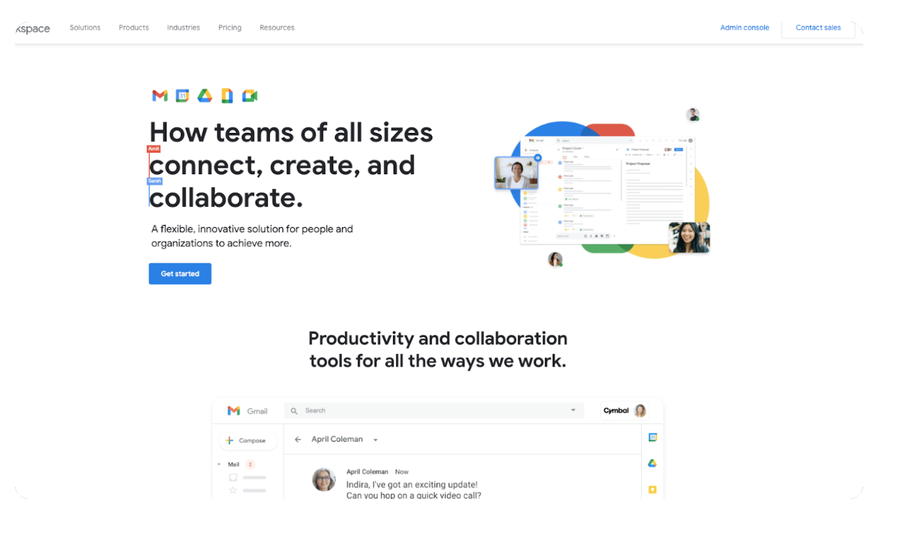

Effective solopreneurship requires strategy.
Juggling dozens of assignments in your head is a recipe for disaster. You can scrape by for a while, but you’ll eventually slip up.
A deadline missed. A project rushed. Clients gone, and your reputation tarnished.
But you can prevent this from happening with the right project management suite.
Solopreneur Project Management 101
Solopreneurs who want to scale their one-person businesses effectively need robust project management tools that scale with them.
These tools should:
- Help organize tasks and projects
- Streamline communication with clients and collaborators
- Offer time tracking and reporting features
- Integrate with other essential software
- Be user-friendly and easily customizable
If you don’t get this right from the beginning, you’re setting yourself up for a difficult transition later on.
So, I’m breaking down some of the tools that have defined my solopreneurship success (and the success of many of my solopreneur friends).
Let’s dive in.
Best project management tools for solopreneurs
Countless tools for solopreneur project management exist to make our lives easier. Among them, 3 stand out that I personally rely on and vouch for: Slack, Notion, and Airtable. In addition to my top picks, there's a slew of other tools I've heard fantastic things about from fellow solopreneurs that you may find helpful.
- Airtable
- Notion
- Slack
- Outseta
- Trello
- Monday
- Asana
- Todoist
- ClickUp
- Evernote
- Harvest
- Canva
- Google Workspace
- Buffer
- Dropbox
Best CRM for solopreneurs
Airtable covers everything you need. That’s why it’s one of the best project management software for solopreneurs.
Need a simple to-do list? It’s got you covered.
Need an automation-heavy, multi-view, AI-powered project management suite? No sweat.
Airtable can do everything from CRM to task management like nobody’s business. It’s integration-friendly, ultra-intuitive, and firmly recommended by me.
Features
Here’s why I love Airtable:
- Scale. Despite its simple functionality, Airtable can scale to any level, thanks to its immense versatility.
- Customizability. You can tweak each and every aspect of your Airtable experience to your liking.
- Integration. I’ve yet to find a tool that doesn’t work flawlessly with Airtable.
- Templates. Airtable ships with dozens of templates, making it easy to get started.
It’s everything a solopreneur needs for customer relationships, task management, and business processes.
> Learn more about Airtable
Best all-in-one workspace for solopreneurs
Notion is the Swiss Army Knife of project management tools. When you need to write, plan, collaborate, or get organized, Notion is your go-to place.
Whether you need a digital notebook, personal wiki, or an elaborate planning system for your next project, Notion has it all.
I use it to support all of my courses and to store my Monthly Templates. I also run much of my content workflow out of Notion.
Even better, Notion works like a blank canvas that you can shape and mold according to your unique workflow. I also love its minimalistic design, which is functional and aesthetically pleasing.
Features
Here’s why Notion stands tall:
- Flexibility. It lets you create customized pages with databases, calendars, kanban boards, and more.
- Interlinked Data. Easily create connections between pages, data, and files for seamless navigation.
- Collaboration. Even as a solopreneur, you need to work with others. Notion is great for sharing and collaborating.
- Rich Content Support. Notion supports various content types, including texts, images, files, checklists, and code snippets.
You can use this as the core of your productivity suite, making your solopreneur experience a breeze.
> Learn more about Notion
Best communication tool for solopreneurs
A solopreneur needs clear communication channels. Whether you’re collaborating with freelancers, clients, or partners, Slack makes it effortless.
It's not just a messaging platform but a hub for teamwork and productivity. With file sharing, voice and video calls, and app integration, Slack is a communications utopia.
Features
Here's why Slack is indispensable:
- Channels. You can set up different channels for different projects or clients.
- Integration. Slack syncs seamlessly with other tools like Google Drive and Trello.
- Notifications. Stay on top of things with customizable notifications.
- Search. Easily find past conversations or files with a powerful search feature.
Slack offers seamless communication for any kind of entrepreneur.
> Learn more about Slack
Integrated platform for growing solopreneurs
Outseta acts as your personal assistant in the world of solopreneurship.
It offers an all-in-one solution for managing your business, especially if you’re in the SaaS or subscription-based industry. You can manage your billing, subscriptions, and CRMs in one place.
Outseta understands that as a business owner, your focus should be on growing your business, not getting bogged down by multiple tools.
Features
Why Outseta shines:
- Streamlined Operations. It combines CRM, billing, email marketing, and customer support into one platform.
- Automated Billing. It makes subscription billing and management a breeze.
- Communication. Easily reach your clients through built-in email and live chat tools.
- Reporting. Outseta offers rich reporting and analytics to keep you informed about your business performance.
Outseta can be your one-stop shop for managing and scaling your solo venture.
> Learn more about Outseta
Visual task management tool for solopreneurs
Trello is great for solopreneurs who think visually. The card-based system makes organizing, prioritizing, and creating projects easy.
From content planning to product launches, Trello’s boards, lists, and cards help you organize and prioritize your projects in a fun, flexible, and rewarding way.
Features
What makes Trello effective:
- Simplicity. It’s incredibly user-friendly.
- Customizable Boards. Tailor your boards with different lists, labels, and more.
- Integration. Trello can be paired with a plethora of apps and services.
- Mobility. Trello works seamlessly across all devices.
For visually inclined solopreneurs, Trello is a no-brainer.
> Learn more about Trello
Comprehensive project management
Monday is an operating system that empowers solopreneurs to design their own workflows, tools, and even applications to run projects and workgroups.
Its visually appealing user interface includes powerful features enabling you to monitor your project’s progress, communicate with team members, and ensure timely delivery.
Features
Monday has stand-out features:
- Work Automation. Automate repetitive work in seconds.
- Time Tracking. Track the time spent on tasks to enhance productivity.
- Visual Project Planning. Use timelines, Gantt charts, and Kanban boards to plan visually.
- Integration. Monday seamlessly integrates with your favorite tools and services.
Monday makes managing even the most complex projects effortless.
> Learn more about Monday
Time management tool for solopreneurs
Asana is a great choice for solopreneurs seeking ultimate control over their workload.
It helps you stay organized, focused, and on top of your game, regardless of the complexities of the projects you handle.
Features
Asana's strengths include:
- Task Hierarchy. It allows you to create tasks and sub-tasks, ensuring no detail is overlooked.
- Timelines & Calendars. Visualize your schedule, set deadlines, and ensure you’re always on track.
- Integration & Automation. Asana boasts vast integration options and lets you automate recurring tasks.
- Collaboration. Share project details, tasks, and feedback easily with clients or team members.
Asana is tailor-made for solopreneurs who prioritize task organization and time efficiency.
> Learn more about Asana
Simple task management for solopreneurs
Todoist is a minimalist’s dream come true. When all you need is a reliable to-do list without the bells and whistles, Todoist may be the answer.
With its clean interface and simple functionality, Todoist helps you to keep your tasks and goals in check. It’s the perfect tool for solopreneurs who prefer simplicity over complexity.
Features
What’s so great about Todoist:
- Simplicity. It’s incredibly streamlined and easy to use.
- Task Prioritization. Assign priorities to your tasks to ensure the most important ones are done first.
- Karma Points. A unique feature that gamifies productivity, encouraging you to stay consistent.
- Cross-Platform. Todoist is available on nearly every device.
For solopreneurs with a penchant for minimalism, Todoist fits the bill.
> Learn more about Todoist
Efficient tool for integrated project management
ClickUp is a powerhouse in project management. It’s a one-stop solution, bringing together the features and tools a solopreneur might need in one place.
Whether task management, documentation, goal tracking, or even time tracking, ClickUp has everything. It’s like having an entire office suite at your fingertips.
Features
Why ClickUp is a game-changer:
- Versatility. It’s packed with features catering to virtually all aspects of project management.
- Custom Views. Create and customize your workspace views with lists, boards, calendars, and more.
- Integration. ClickUp incorporates a wide range of third-party tools.
- Performance Reporting. Keep track of your productivity and performance with detailed analytics.
ClickUp’s holistic approach puts it among the best project management for solopreneurs.
> Learn more about ClickUp
App for note-taking and organizing information
Evernote is the classic note-taking app we're all familiar with. With its rich text editor, easy organizational structure, and seamless syncing across devices, Evernote makes it incredibly easy to jot down ideas, plans, and notes.
Features
Evernote excels in:
- Note Organization. Create notebooks and tags to organize notes efficiently.
- Web Clipper. Save web articles and pages directly to your Evernote.
- Document Scanning. Use your mobile device to scan and save documents.
- Integration. Evernote works well with other popular apps and services.
Solopreneurs who need a reliable note-taking app should opt for Evernote.
> Learn more about Evernote
Time tracking and invoicing platform
When you're a solopreneur, tracking time and invoicing can be tricky. Harvest simplifies this by providing an easy-to-use platform for tracking time spent on projects and generating invoices.
With Harvest, you can ensure you use your time efficiently and get paid appropriately for your work.
Features
Why Harvest makes the cut:
- Time Tracking. Easily track time spent on different tasks and projects.
- Invoicing. Generate professional invoices based on tracked time and expenses.
- Reporting. Understand where your time is being spent through detailed reports.
- Integration. Harvest integrates well with other tools, making it an excellent addition to your toolbox.
Harvest is perfect for solopreneurs who want to automate their timekeeping and payments.
> Learn more about Harvest
Design and social media management tool for solopreneurs
Canva is more than a design tool. With its user-friendly interface, countless templates, and robust social media suite, Canva makes content creation easy, even for amateurs.
Canva is a one-stop shop for designing social media posts, presentations, promotional materials, and anything else you can imagine.
Features
Canva shines for its:
- Templates. It offers thousands of pre-made templates that you can customize.
- User-friendliness. Its drag-and-drop interface is intuitive and easy to use.
- Variety. Canva supports various formats for social media, print materials, presentations, and more.
- Free Version. It offers a generous free tier, perfect for solopreneurs on a budget.
Canva is ideal for solopreneurs who need a reliable, easy-to-use design tool.
> Learn more about Canva
Productivity suite for solopreneurs

Google Workspace is an all-in-one cloud-based productivity and collaboration tool suite. It includes all your favorite Google apps like Gmail, Docs, Sheets, Slides, Calendar, and more.
It’s everything in one place and accessible from anywhere, so it's ideal for busy solopreneurs.
Features
Google Workspace is a fan favorite because of its:
- Integration. The apps within the suite work seamlessly together.
- Reliability. Google's infrastructure guarantees uptime and security.
- Scalability. As your needs grow, so does the suite.
- Collaboration. Share and work on files simultaneously with others.
Google Workspace is perfect for anyone who wants everything in one place.
> Learn more about Google Workspace
Social media management tool for solopreneurs
Managing multiple social media accounts isn't easy. But Buffer’s comprehensive platform helps solopreneurs streamline and automate their social media management.
From planning and scheduling posts to tracking the performance of your content, Buffer streamlines social media marketing.
Buffer is and easy and cost-effective way for beginners to start scheduling and publishing social media content.
Features
Here's why Buffer stands out:
- Post Scheduling. Plan and schedule posts for different platforms in advance.
- Analytics. Get insights into how your posts are performing.
- Multi-platform support. Supports all major social media platforms.
- Easy-to-use interface. Buffer's interface is clean and user-friendly.
Buffer is a valuable tool for solopreneurs who need to manage social media efficiently.
> Learn more about Buffer
Cloud storage solution for solopreneurs
Dropbox is a versatile, secure cloud storage system that lets you easily store and share files of any size. And thanks to its powerful async features, you can access it from anywhere.
Features
Dropbox's assets are:
- Reliability. It is known for its stability and security.
- Collaboration. Easily share files and collaborate with others.
- Integration. Works seamlessly with other apps and services.
- Cross-platform. Dropbox is available on all major platforms.
Dropbox is perfect if you need a reliable and secure way to store your files online.
> Learn more about Dropbox
Getting Started with Solopreneur Project Management
As a solopreneur, your time is your most valuable asset. The ultimate goal of employing these project management tools is to give you more time to focus on what you do best — creating, innovating, and building your business.
Armed with this knowledge and these tools, you’re well on your way to becoming a more productive and successful solopreneur.
May your projects be many and your troubles be few.
Happy managing.